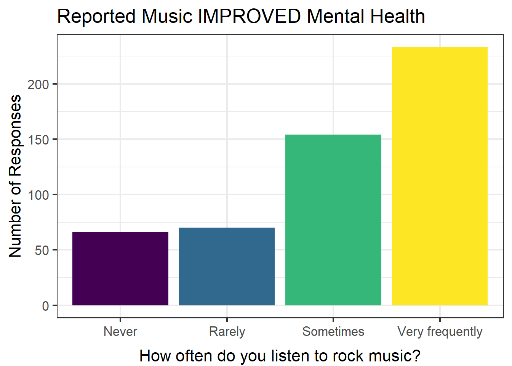

Music is a luxury that all people enjoy one way or another. People listen for a variety of different reasons, often to make oneself feel good, reduce stress, or as a distraction from something happening in their life. Music therapy was created because of the effects music has been shown to have on quality of life through relaxation and comfort. It is a low cost intervention that has been shown to improve mood and decrease anxiety, as well as decrease the pain associated with medical procedures and chronic conditions (Kemper & Danhauer, 2005). The type of music also seems to reflect a person’s state of emotional vulnerability at a given time (Baker & Bor, 2008).
A Look at the Data
Included in the data for the present analysis, individuals have reported the extent to which they have listened to a variety of genres and have reported how often they experience symptoms of four different mental disorders: anxiety, depression, OCD, and insomnia.
The data that is used in this exploratory analysis comes from Kaggle, and contains self-reported survey responses from 736 participants. The data was collected through an online google form created by Catherine Rasgaitis, an undergraduate student from the University of Washington. The form was posted in various Reddit forums, Discord servers, and social media platforms, as well as posters in public locations such as libraries and parks. Participants of all ages and locations were permitted to take the survey, gathering a final random sample ranging in ages from 10 to 89 years old (M = 25).
Within the survey, people were asked to rate how much they listen to 16 different music genres by selecting Never, Rarely, Sometimes, or Very Frequently. They were also presented with symptoms of Anxiety, Depression, OCD, and Insomnia and asked to rank each disorder on a scale of 0 to 10; 0 representing not having experienced this disorder at all and 10 representing having experienced this disorder regularly or to an extreme.
The variables we are interested in from the data include:
Age: Age of participantFav genre: Favorite or top genreFrequency [Classical]: How frequently the respondent listens to classical musicFrequency [Country]: How frequently the respondent listens to country music
…
Frequency [Video Game]: How frequently the respondent listens to video game musicAnxiety: Self-reported anxiety on a scale of 0-10Depression: Self-reported depression, on a scale of 0-10Insomnia: Self-reported insomnia, scale of 0-10OCD: Self-reported obsessive compulsive disorder, 0-10Music effects: Does music improve/worsen mental health conditions?
Since our analysis is focused around those experiencing symptoms associated with anxiety, depression, insomnia, and OCD, those who reported no association to any of these disorders will be excluded from our future analysis. From doing this, 10 participants’ responses were removed from our data set.
Visual Analysis
To begin our analysis, we will first look into our demographic of the sample that has participated in the study. A plot showcasing the distribution of ratings for each disorder can be seen below.
From this visual we can see that those who experience anxiety mostly reported a rating around 7, along with those who reported symptoms of depression. The distribution of those reporting symptoms of OCD is skewed right, demonstrating that only a small number of people reported a higher rating of OCD. We can view a similar trend for those reporting symptoms of insomnia, although the distribution is not as strongly skewed as the responses for OCD. A table with the average ratings for each disorder is shown below.
| disorder | M | SD |
|---|---|---|
| Anxiety | 5.92 | 2.726 |
| Depression | 4.86 | 2.996 |
| Insomnia | 3.79 | 3.078 |
| OCD | 2.67 | 2.845 |
It appears that of the disorders displayed in the table, people are, on average, rating anxiety the greatest. This is not surprising, since anxiety is the most common among these conditions.
Since the data reveals rock music as the top genre voted by participants, our analysis will dive deeper into this genre. The next few plots are taken from a Shiny App that was created to aid in the exploration of this data.

The plot above contains responses from those who reported music improving their overall mental health and reported experiencing symptoms of anxiety. The bars represent the answers of participants when asked how often they generally listened to rock music. It can be observed that most people included in this category listen to rock music very frequently. On the other hand, the next plot demonstrates the answers of those who experience anxiety but report music to have overall worsened their mental health.
The main difference that can be seen between the two previous visuals occurs within those who reported never listening to rock music. It appears that there are a greater amount of people in this group who have never listened to rock music than in the group who reported music being beneficial towards their mental health. It is important to acknowledge that the number of people who reported music worsening their mental health and never listening to rock music is small, and we should be careful when making conclusions.
The next visualization demonstrates the differences between these two groups more clearly, and assess if there really are differences between these two groups.

This plot also uses proportion of responses instead of number of responses to allow for better comparisons. The differences between each of the reported music effects is small, but we can see that those who listen to rock music frequently are more likely to say music has no effect on their overall mental health, and those who never listen to rock music are reporting improvement or worse effects slightly more than those who report frequent listening.
This analysis investigated the relationship of those experiencing anxiety and listen to rock music, but using the Shiny App that was created for this study allows users to investigate the other disorders and genres as well. Another interesting finding found through exploration of the Shiny App was those who experience symptoms of depression and report music worsening their mental health listen to video game music very frequently and those who report music improving their mental health more report never listening to video game music.
Conclusion
In conclusion, this project has allowed us to observe trends between various mental disorders and music genres people listen to. We have revealed that those who say music has worsened their mental health report higher rates of depression opposed to other disorders. We also found interesting trends between mental health and those who listen to genres such as rock or video game music. Further findings can be explored using the Shiny App.
If there was more time to further explore this data set, variables concerning the context around listening to music would be interesting to investigate. This data set includes variables such as age, the number of hours listening to music per day, and if someone listens to music while working that could inform the context around those listening to music.
An important limitation of the present study is the small sample size for some of the subgroups of people in this data, like people who listen to specific genres. It is also important to highlight that the responses in this survey are self-reported answers, which can contain much variation and bias. It is unknown whether participants have been formally diagnosed with anxiety, depression, OCD, or insomnia, as their answers are solely based on the associated symptoms they have experienced. Lastly, the sample of participants represents a small group of people from the area near the University of Washington, so conclusions drawn from this analysis should not be quickly generalized to all groups of people.
Connection to Class Ideas
Color was added to all visualizations to make them more appealing and easier to understand. I also made the base font for all visuals larger. The Shiny App created for this project includes two tabs; one with two interactive visuals and another with an interactive table containing other variables in the data set. The sidebar contains a select input option for disorder and genre. There is also a slider input to choose the minimum number of symptoms that were reported. There are radio buttons to select whether music was reported to improve, worsen, or have no effect on mental health. Lastly, there is another select input option to reflect the change in frequency of listening to the selected genre in the second plot.
References
Baker F. & Bor W. (2008). Can Music Preference Indicate Mental Health Status in Young People? Australasian Psychiatry. 16(4), 284-288. https://journals.sagepub.com/doi/10.1080/10398560701879589
Kemper, K. J., & Danhauer, S. C. (2005). Music as Therapy. Southern Medical Journal, 98(3), 282–288. https://doi.org/10.1097/01.smj.0000154773.11986.39